地政学
サイパンは北マリアナ諸島の行政中心で、米国と太平洋島嶼世界の制度が重なります。グアム、日本、フィリピン、ミクロネシアを結ぶ位置にあり、軍事史、航空路、移民、観光が島の政治感覚を形作ります。海上の結節点です。
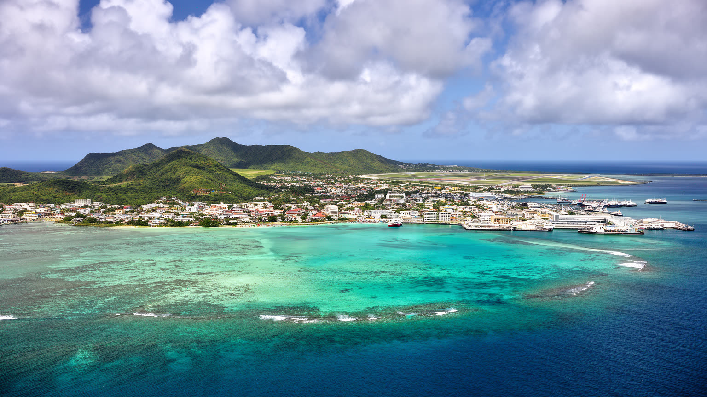
🇲🇵 北マリアナ諸島 / 米国コモンウェルス / World City Atlas
西太平洋の小さな島に、北マリアナ諸島の行政、観光、港湾、戦争記憶、チャモロとカロリニアンの文化、移民労働、台風への備えが集まる都市です。
都市の骨格
サイパンは小さな島でありながら、政府機関、港、空港、観光地、住宅地、学校、病院、戦跡が近接します。海の明るさと島社会の制約を同時に読む必要があります。
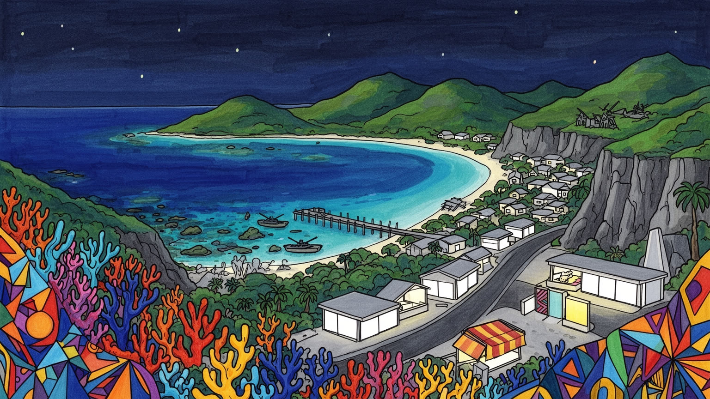
サイパンは北マリアナ諸島の行政中心で、米国と太平洋島嶼世界の制度が重なります。グアム、日本、フィリピン、ミクロネシアを結ぶ位置にあり、軍事史、航空路、移民、観光が島の政治感覚を形作ります。海上の結節点です。
観光、行政、港湾、空港、建設、小売、医療、教育、清掃、介護が雇用を支えます。ホテルや店の働き手にはフィリピン、韓国、中国、バングラデシュなど出身者も多く、賃金と在留資格が生活を左右します。島経済の実務です。
チャモロとカロリニアンの土地の記憶、カトリックの教会、プロテスタント、イスラム、仏教、移民の礼拝が共存します。祭礼、家族、海の食、言語、墓地、戦没者への祈りが、観光地の表情より深い島の時間を作り続ける。
旅行者はラグーン、マニャガハ、バンザイクリフ、ガラパンへ向かうが、住民には台風、物価、医療、学校、住宅、車移動、輸入品への依存が日常です。美しい海を楽しむほど生活の脆さも見たい島なのです。水と電力も大切のです。
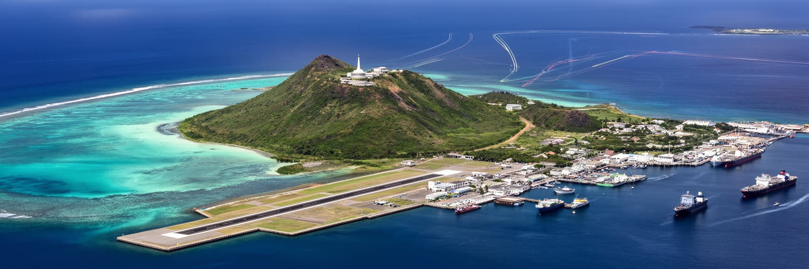
サイパンは地図で見ると小さな島ですが、制度と記憶の重なりは大きいです。北マリアナ諸島は米国と政治的に結びつくコモンウェルスで、住民は米国市民でありながら、州とは異なる自治、連邦制度、移民管理、軍事的な地理の中で暮らします。島はグアムの北、日本とフィリピンの南東、ミクロネシアの島々へ開く位置にあり、航空路と海路は観光だけでなく、医療搬送、物資、行政、家族の移動を支えます。第二次世界大戦の激戦地であったことも、サイパンの地政学を現在まで引き寄せるのです。崖、滑走路、海岸、慰霊の場所は、単なる景勝地ではなく、帝国、戦争、米軍統治、自治の変化を記憶する土地です。島の小ささは政治を身近にし、連邦予算、観光市場、台風支援、移民政策の変更が生活へすぐ届きます。サイパンを読むには、海のリゾートとしての軽さではなく、太平洋の大きな力が小さな行政中心へ集まる構図を見る必要があります。政府庁舎、港、空港、ホテル街、学校、教会が近い距離にあることは、便利さであると同時に、外部の制度変更に弱い構造でもあります。島の自治は、米国との関係を前提にしながら、チャモロとカロリニアンの土地感覚、移民住民の生活、観光資本の圧力を調整する作業になります。周縁に見える島ほど、太平洋政治の核心を映しています。島の安全保障と生活政策は、海図よりも近所の道路や病院で実感されます。
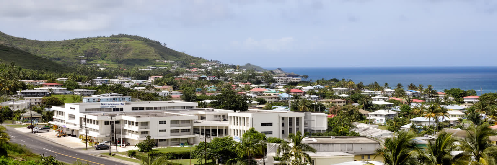
サイパンは北マリアナ諸島の人口と行政機能が集中する島です。キャピトルヒル周辺には政府機関が置かれ、ススペには司法や教育、病院、公共サービスが近く、ガラパンには商業と観光の機能が重なります。島全体が一つの自治体として扱われるため、日本の都市のような中心市街地だけを想像すると実態を見誤るのです。北部の崖と慰霊地、中央の住宅地と学校、南部の港湾、空港へ向かう道路、ラグーン沿いのホテル街が、車移動を前提に結ばれています。政府の存在は雇用を作りますが、公共部門への依存は財政や連邦支援の変化に影響されやすいです。小さな島では、役所、病院、学校、裁判所、港、空港のどれかが止まるだけで生活の不安が広がります。行政中心であることは、他の島から人が来る責任も意味します。ロタやテニアン、北部諸島の住民にとって、サイパンは買い物、手続き、医療、教育、政治の窓口になります。ですが、その集中は島内の交通渋滞、住宅不足、公共サービスの偏りも生みます。自治政府は観光振興だけでなく、道路、上下水、病院、学校、災害復旧、土地利用を細かく調整しなければなりません。サイパンの都市性は高層ビルではなく、離島社会の生活機能が狭い島に集まる密度にあります。行政の街として見ると、海岸のリゾート像の下にある公共サービスの重さが見えてきます。離島をまとめる中心として、行政の距離感は住民の安心を左右します。
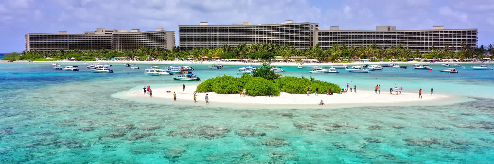
サイパン観光の明るい顔は、西岸のラグーン、白い砂浜、マニャガハ島、ダイビング、シュノーケリング、夕日の海にあります。浅い珊瑚礁の水域は、短期滞在者にも分かりやすい南国のイメージを作り、ホテル、ツアー会社、レンタカー、飲食店、土産物店の収入を支えてきました。日本、韓国、中国、米国本土、グアムからの旅行者の動向は島経済を大きく揺らすため、航空便の減少、感染症、台風、外交関係、為替の変化はすぐ雇用へ響くのです。海は観光商品である前に、漁、家族の休息、子どもの遊び、宗教行事、先祖の記憶の場所でもあります。人気スポットで人が増えれば、珊瑚の踏み荒らし、ごみ、船の安全、海岸浸食、地元住民の静けさが問題になります。ラグーンを守ることは、観光業の維持だけでなく島社会の生活環境を守ることです。ホテル前の整った浜辺だけを見れば、海は無限の資源に見えますが、珊瑚礁は水温上昇、汚水、係留、過剰利用に敏感です。ガイドの説明、乗船管理、日焼け止めの選び方、海況の判断、立入制限の尊重は、旅人側にも求められます。サイパンの観光が成熟するかどうかは、海の透明度を消費するだけでなく、海を休ませる時間と地域の使い方を組み込めるかで決まるのです。美しい浅瀬は、島の経済と文化を同時に支える脆い基盤です。海を守る規則が、島の雇用を長く保つ条件にもなります。この視点は大切です。
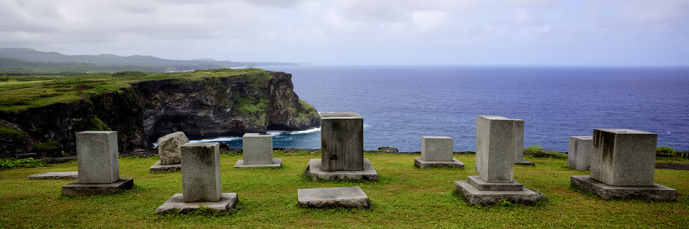
サイパンを語る時、第二次世界大戦の記憶を避けることはできません。島は一九四四年の激しい戦闘の舞台となり、日本軍、米軍、民間人、チャモロとカロリニアンの住民、朝鮮半島や他地域から動員された人々の記憶が複雑に重なります。バンザイクリフやスーサイドクリフは観光名所として案内されるが、そこは写真を撮るための断崖ではなく、多くの死と追悼を抱えた場所です。戦争記憶は、国ごとに語り方が違い、慰霊碑、博物館、遺骨収集、学校教育、家族の話の中で今も形を変えます。リゾートの明るい海岸と戦跡が近いことは、サイパンの都市経験を特別なものにしています。旅行者は数時間で崖を巡れるが、土地の人々にとってその記憶は祖父母の生活、避難、占領、戦後統治、土地利用と切り離せません。記憶を尊重するには、過度な演出や一国中心の物語に寄せすぎず、島の住民が被った被害と戦後の再建を丁寧に見ることが必要です。戦跡観光は経済を支える一方、場所を消費してしまう危険もあります。静かに立ち止まり、説明を読み、慰霊の意味を理解する態度が求められます。サイパンの崖は、海の絶景であると同時に、太平洋戦争が民間人と島社会へ何を残したかを問う場所です。その問いを抱えたまま海を見る時、島の風景は観光写真より深い層を持ちます。慰霊の場所では、沈黙そのものが都市を読む作法になります。
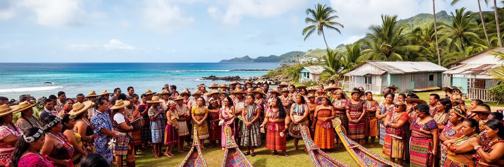
サイパンの文化を理解するには、チャモロとカロリニアンの歴史を中心に置く必要があります。海を渡る技術、家族と氏族の関係、言語、食、歌、踊り、墓地、土地への感覚は、スペイン、ドイツ、日本、米国の統治を経ても島の生活に残り続けたのです。観光パンフレットでは伝統舞踊や工芸が分かりやすく示されるが、文化は舞台上の演目だけではありません。家族行事、教会の集まり、村の祭り、葬儀、海での採集、台風後の助け合い、土地の継承が日常の基礎になります。米国制度の中で英語が強く、移民住民の言語も多い島では、先住民言語を学校や家庭でどう保つかが重要な課題です。文化を商品化しすぎれば、土地と権利の問題は見えにくくなります。開発やホテル、道路、軍事的な要請が土地利用に影響する時、誰が土地を語るのかが問われます。チャモロとカロリニアンの文化は、島の過去を飾るものではなく、自治、教育、観光、環境保全の判断に関わる現在の力です。外から来る人は、挨拶や地名、墓地、祭礼への距離の取り方を学ぶ必要があります。サイパンの多文化性は、移民の生活を含めて広がるが、その中心には島の先住民が長く守ってきた海と土地の記憶があります。それを見ずにリゾートだけを楽しむと、島の都市性は浅くなります。文化の継承は、観光ではなく島の自治の根にも関わります。学校で言葉を学び、家庭で語り直す時間が未来を支えます。
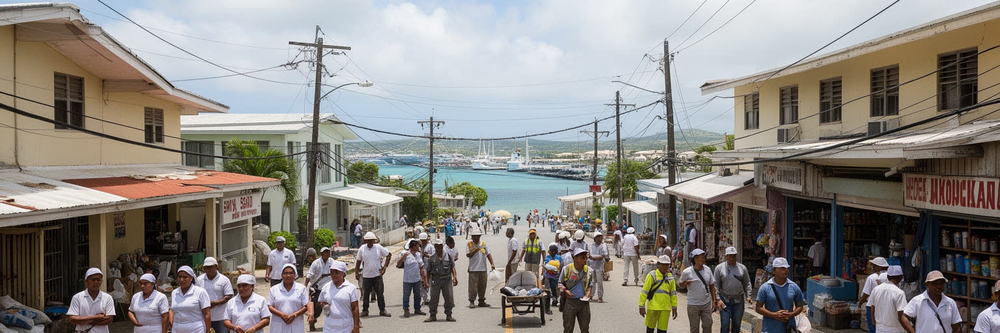
サイパンの経済を動かす現場には、地元住民だけでなく、多くの移民労働者の存在があります。ホテル、飲食、清掃、建設、小売、介護、家庭内労働、港湾、修理、警備では、フィリピン、韓国、中国、バングラデシュ、ミクロネシア諸島などにルーツを持つ人々が働いてきました。島の観光は国際的ですが、その国際性は旅行者だけでなく、働き手の在留資格、送金、家族分離、言語、住宅、医療、労働条件の問題としても現れます。かつての縫製工場や移民制度をめぐる論争は、サイパンが米国市場と独自の規制の間で成長してきたことを示します。近年も建設やカジノ開発をめぐる労働問題は、島経済の不均衡を浮かび上がらせたのです。観光客にとって快適なホテルや店舗は、長時間勤務、低賃金、寮生活、移動手段の乏しさによって支えられる場合があります。サイパンを社会として見るなら、海の美しさと同じくらい、働く人が安全に暮らせるかを問わなければなりません。小さな島では雇用主、住宅、役所、教会、学校が近く、支援も監視も生活に密着します。労働者が地域社会に参加し、子どもが学校で育ち、礼拝や市場でつながることで、島の多文化性は日常になります。観光収入が戻る時ほど、その利益が見えにくい働き手へ届くかが、都市の公正さを測る基準になります。労働の尊厳を守る制度は、島の観光品質そのものでもあります。見えない仕事が島を保ちます。
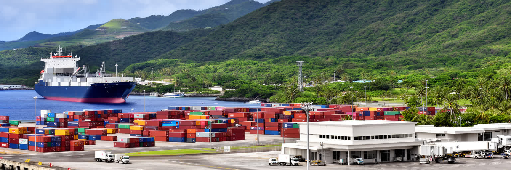
サイパンの暮らしは港と空港に強く依存しています。島内で作れるものは限られ、食料、燃料、建材、医薬品、機械、車、日用品の多くは外から届きます。港ではコンテナ、資材、燃料、漁船、作業車が動き、空港は観光客だけでなく、住民の移動、医療搬送、ビジネス、家族の往来を支えます。海に囲まれた島では、物流の遅れがそのまま物価、品切れ、建設、病院、学校、ホテル営業に影響します。航空路が減れば観光収入は落ち、船便が乱れれば暮らしの費用は上がるのです。台風後には港湾施設、道路、電力、通信、空港機能の復旧が島全体の再建を左右します。交通拠点は華やかな玄関であると同時に、脆弱な生命線です。サイパンの都市計画は、港や空港の効率だけでなく、住宅地への騒音、大型車の動線、沿岸環境、災害時の代替輸送を考える必要があります。小さな島では道路の迂回路が少なく、一つの橋や交差点の損傷が長い停滞を生みます。物流費の高さは生活費を押し上げ、地元産品や修理業の価値も高めます。空港に到着する旅行者はすぐリゾートへ向かうが、その背後では倉庫、整備、税関、配送、燃料管理が島の日常を支えています。港と空港を見ることは、サイパンの美しい孤立がどれほど外部との連結に支えられているかを知ることでもあります。輸送の冗長性と地域の備蓄を持つことが、離島の安心を長く作ります。備えは生活の基礎です。
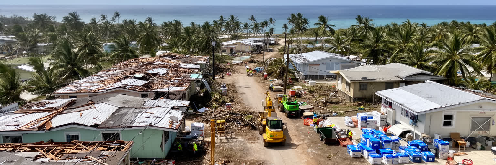
サイパンの暮らしには、台風への備えと復旧が深く組み込まれています。熱帯海洋性の気候は一年を通じて温暖ですが、雨季には豪雨と強風が増え、強い台風は住宅、電柱、学校、ホテル、港、空港、道路、通信を一気に傷つけるのです。二〇一五年のスーデラー、二〇一八年のユツのような大型台風は、島の脆弱性と助け合いの力を同時に示しました。家屋の補強、発電機、飲料水、燃料、食料の備蓄、保険、避難所、連邦支援、ボランティア、親族ネットワークが復旧の速度を左右します。観光都市では、ホテルの再開や航空便の復旧が雇用に直結するが、住民の家や学校が直らなければ生活は戻りません。台風後のサイパンでは、倒木の片付け、屋根の修理、停電、断水、通信不安、物資配布が長く続くことがあります。災害を一時的な出来事としてではなく、島の都市運営の前提として見る必要があります。復旧は行政だけでなく、近所、教会、企業、移民コミュニティ、連邦機関の連携で進みます。建物を強くすること、電力網を分散させること、海岸の浸食を抑えること、避難情報を多言語で出すことは、観光振興と同じくらい重要です。サイパンの美しい青空は、災害がないことを意味しません。むしろ、その青空を取り戻すための修理と準備が、島の日常を支えています。復旧の知恵は、次の強い台風に備える教育として受け継がれるのです。記憶が備えを強くします。
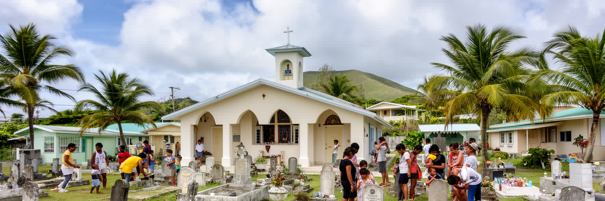
サイパンの日常では、宗教施設が生活の重要な支えになっています。カトリック教会はスペイン統治以来の長い影響を持ち、家族行事、葬儀、祭礼、学校、地域の助け合いに深く関わります。そこにプロテスタント教会、移民コミュニティの礼拝、イスラムの祈り、仏教施設、韓国語やタガログ語、中国語、英語、チャモロ語、カロリニアン語が交わる集まりが重なります。宗教は観光客には見えにくいが、仕事探し、通訳、送金、病気、台風後の支援、孤独への対応で実際的な役割を果たすのです。小さな島では、礼拝所が出身地を越えた情報網になり、移民労働者にとっては安心できる場所にもなります。一方で、多文化の共存は自動的に調和を生むわけではありません。言語、在留資格、所得、土地所有、政治参加の差は、近い距離で生活するほど強く感じられるのです。宗教行事や祭りを通じて互いを知る機会がある一方、制度的な包摂も必要です。サイパンの都市文化は、海岸の娯楽だけでなく、祈り、墓地、家族、学校、地域食堂、寄付、相互扶助によって形作られています。戦争記憶の慰霊と、日々の礼拝も同じ島の精神的な地図に入ります。旅人が教会や墓地、祭礼に近づく時は、写真の対象ではなく、住民の祈りの時間として尊重する姿勢が求められます。多文化の島は、見える祝祭と見えない支えの両方で成り立つのです。島の信頼は、こうした小さな支援の積み重ねで育つのです。
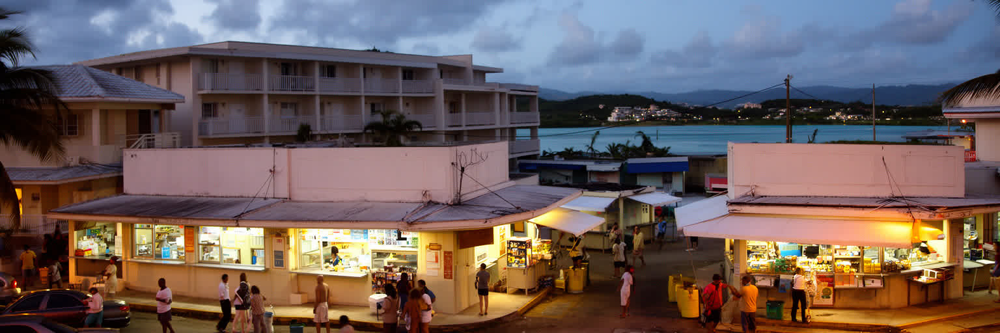
ガラパン周辺はサイパンの商業と観光の顔として知られるのです。ホテル、飲食店、土産物店、ビーチ、夜の店、車で動く買い物客が集まり、観光客にとっては滞在中に最も歩きやすい地区になります。ですが、少し視線をずらすと、住宅、学校、教会、職場へ向かう車、買い出し、子どもの送迎、働き手の寮、空き店舗、修理工場が見えます。観光需要が落ちると、ガラパンの明かりはすぐ暗くなり、家賃、雇用、ローン、商店の継続に影響します。逆に観光が戻ると、交通、騒音、短期的な物価上昇、サービス労働の不足が課題になります。島の日常は徒歩だけで完結しにくく、車移動、駐車、燃料費、道路の状態が生活の質を左右します。買い物の選択肢は限られ、輸入品の価格は家計を圧迫します。住民にとってガラパンは娯楽の場であると同時に、観光経済の浮き沈みを直接感じる場所です。街の魅力を保つには、旅行者が歩ける安全な通り、地元の人が使える店、働く人の住宅、夜間の治安、公共空間の清潔さを同時に整える必要があります。観光客向けの明るい看板が消えても、島の暮らしは続きます。朝の市場、教会の集まり、学校の送迎、病院への通院、港へ向かうトラックが、サイパンの本当の時間を作っています。観光街の再生は、住民が使える日常機能と歩く楽しさ、働く人の居場所を残せるかにもかかっています。夜のにぎわいも生活の上にあります。
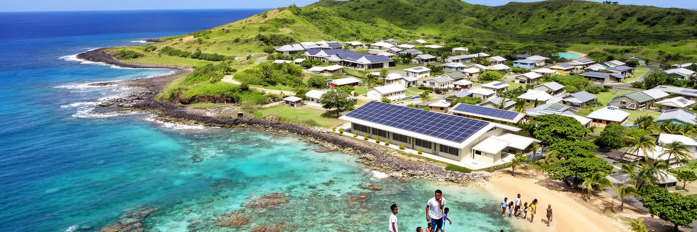
サイパンの未来は、観光をどう戻すかだけでは決まらありません。航空便とホテル稼働は重要ですが、若者が残れる仕事、医療と教育の質、住宅費、電力と水の安定、海岸と珊瑚礁の保全、台風に強い建物、移民住民の権利、先住民文化の継承が同じくらい重いです。島経済は外部市場に敏感で、旅行者の国籍構成や為替、連邦政策、気候災害で大きく揺れるのです。だからこそ、地元の小規模事業、農漁業、修理、教育、介護、デジタル業務、地域文化を観光と結びつけすぎずに育てる必要があります。海の美しさは最大の資源ですが、それに過剰に依存すれば、環境負荷と雇用の不安定さを深めるのです。サイパンの持続性は、巨大な開発を呼び込むことより、島の限られた土地と水をどう使い、住民が暮らし続けられるかにかかっています。若い世代が言語や文化を学びながら、島の外で得た技能を戻せる環境も大切です。再生可能エネルギー、雨水管理、公共交通の工夫、遠隔医療、災害時の通信、地域学校の強化は、リゾートの印象より地味ですが都市の基礎になります。外から訪れる人も、安い楽園としてではなく、生活と歴史のある島として滞在する姿勢が求められます。サイパンの未来は、青い海を守りながら、そこに住む人の尊厳を中心に置けるかで測られるのです。外部に開きながら、島内の回復力と学びの場を太くすることが課題です。未来は日々の制度に宿るのです。